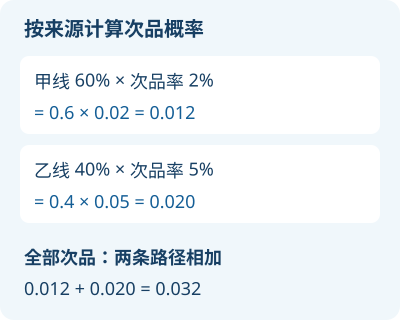

第1章 随机事件与概率
学习路线：第一次自学，从哪里开始？
符号速查：常用符号、读法与公式条件。
习题与工具：查看各章习题和综合练习。
综合练习：前四章分步练习与解答。
从结果集合出发，学习计算可能性、利用已知信息更新概率。
依据：王丽主编《概率论与数理统计》，科学出版社，2026年第一版，第1章。下文例题均为新编，图为自绘。P(A) 表示事件 A 的概率；概率没有单位。
1.1 随机事件及运算
1.1.1 随机现象与随机试验
掷骰子之前，我们知道可能出现1到6点，却不能预先确定这一次是哪一点。这样的不确定性称为随机性。随机试验是对随机现象进行的观察或操作：通常可以在相同条件下重复，事先知道所有可能结果，但不能预知某次的具体结果。这里的“试验”也可以是观察，并非一定要在实验室操作。
1.1.2 样本空间与事件
一次试验所有可能的基本结果组成样本空间，记为 Ω；每个基本结果称样本点，记为 ω。事件是由满足某个条件的样本点构成的集合。试验结果落在事件的集合内，就说这个事件发生。
例如掷一次骰子，Ω={1,2,3,4,5,6}；事件 A=“点数为偶数”={2,4,6}。Ω 是必然事件，空集 ∅ 是不可能事件。样本空间的选择依赖记录内容：掷两次硬币，若区分先后，Ω={正正,正反,反正,反反}；若只记录正面次数，则 Ω={0,1,2}，但这三个结果并非等可能。
1.1.3 事件的关系与运算
| 记号 | 含义 |
|---|---|
| A⊆B | A发生必然导致B发生 |
| A∪B | A、B至少一个发生，包括同时发生 |
| A∩B（或AB） | A、B同时发生 |
| A−B | A发生而B不发生 |
| Aᶜ | A不发生，即 Ω−A |
| A∩B=∅ | A、B互斥，不能同时发生 |
教材用字母上方横线表示对立事件；这里用 Aᶜ 表示同一含义。对立事件既互斥又覆盖整个 Ω；互斥事件不一定对立。若一组事件两两互斥、合起来覆盖 Ω，称为完备事件组，也称划分。
矩形表示 Ω；蓝色和橙色区域分别表示 A 和 B，重叠区域表示两者同时发生。图为示意，面积不代表概率。
掷一枚公平骰子，A=“点数大于3”，B=“点数是偶数”。求 A∪B、AB、A−B 和 Aᶜ。
先逐个写出样本点：A={4,5,6}，B={2,4,6}。并集保留至少属于一个集合的点；交集保留公共点；差集从A中去掉也属于B的点。
答案：A∪B={2,4,5,6}；AB={4,6}；A−B={5}；Aᶜ={1,2,3}。
逐点检查即可，不需要先计算概率。
掷一次骰子，设 A={1}、B={2}，两者互斥，因为没有共同结果；但它们不是对立事件，因为还可能出现3、4、5、6。A 的对立事件是 {2,3,4,5,6}。把结果分成 {1,2}、{3,4}、{5,6} 三组，它们互不重叠且覆盖全部结果，因此构成完备事件组。
完整覆盖很重要：如果只分 {1,2} 和 {3,4}，就漏掉了5和6，不能直接用于后面的全概率公式。
1.1.4 运算规律
并、交满足交换律和结合律，也满足分配律。例如 A∩(B∪C)=(A∩B)∪(A∩C)。最常用的对偶律（德摩根律）是：
第一式用语言说：“至少一个发生”的反面是“一个都不发生”；第二式：“两个都发生”的反面是“至少一个不发生”。同理，有限个或可列个事件的并取对立，等于各对立事件的交，反之亦然。
设 A、B、C 分别表示三台设备当天发生故障。表示“至少两台故障”和“至多一台故障”。
至少两台故障，只要 AB、AC、BC 中有一个发生即可；三台都故障时也被包含。至多一台是该事件的对立事件。
答案：至少两台为 AB∪AC∪BC；至多一台为 (AB∪AC∪BC)ᶜ。
检查：三台都故障时前者成立、后者不成立；一台故障时恰好相反。
详细讲解与练习
为什么先学事件？
概率讨论的是“某件事发生的可能性有多大”。计算之前，必须先说清楚：我们做了什么观察？哪些结果算这件事发生？否则“求概率”连对象都没有确定。
例如掷一次骰子，“出现偶数”不是一个具体点数：出现 2、4、6 都算成功。把这三个结果放在一起，就得到一个事件。这个“事件”与日常语言中的一次具体事故不同，它是一组符合条件的结果。
随机试验、样本点和样本空间
随机试验是一次按明确规则进行的观察或操作。试验可以在相同条件下重复；事先知道可能结果，但一次试验前通常不能确定实际出现哪个。比如掷硬币、抽取产品观察是否合格。“试验”不一定是在实验室里做实验。
- 样本点：按选定的记录方式，一个不可再分的结果，常记为 ω。
- 样本空间：该试验所有可能的样本点组成的集合，记为 Ω。
- 事件：由样本空间中符合某条件的样本点组成的集合，通常记为 A、B 等。
试验一旦结束，实际结果是样本空间里的一个样本点。如果它属于事件 A，就说 A 发生。
例 1：连续掷两次硬币
记正面为正、反面为反，并记录先后顺序，则
Ω = {正正，正反，反正，反反}。
“恰好出现一次正面”对应 A = {正反，反正}；“至少出现一次正面”对应 B = {正正，正反，反正}。注意“至少一次”包含两次，“恰好一次”不包含两次。
如果只记录正面出现的次数，可以另选 Ω = {0，1，2}。但这三个结果不等可能：公平硬币独立掷两次时，次数 1 对应正反和反正两种情况，所以概率是 1/2，次数 0 和 2 的概率各是 1/4。能列出三个结果，不代表每个都是 1/3。
怎样检查样本空间？
- 记录的是什么？是否区分顺序？
- 每个可能结果有没有漏掉？
- 一次试验的实际记录能否对应唯一一个样本点？
- 题目有没有给出等可能的依据？没有就不要直接用“有利个数÷总个数”。
必然事件、不可能事件和对立事件
- Ω 是必然事件：每次试验的结果都落在 Ω 中。
- 空集 ∅ 是不可能事件：它不含任何样本点。
- A 的对立事件记作 Aᶜ，也常写成 A 上方加横线，表示“A 不发生”，即 Ω 中不属于 A 的全部结果。
例如掷一次普通六面骰子，A = {2,4,6} 为“偶数”，则 Aᶜ = {1,3,5} 为“不是偶数”。A 与 Aᶜ 不可能同时发生，而且两者必有一个发生。
“概率为零”不总等于“不可能”：在连续模型里，从 0 到 1 均匀随机选一个数，取到恰好 0.5 的概率为 0，但 0.5 仍是可能结果。初学时不要把这两种说法混为一谈。
把中文翻译成事件运算
设 A、B 是同一个试验的事件：
| 记号 | 读法 | 发生条件 |
|---|---|---|
| A ∪ B | A 与 B 的并 | 至少一个发生，也允许两个都发生 |
| A ∩ B 或 AB | A 与 B 的交 | 两个都发生 |
| A − B | A 减 B | A 发生而 B 不发生 |
| Aᶜ | A 的对立事件 | A 不发生 |
| A ⊆ B | A 包含于 B | 只要 A 发生，B 就必然发生 |
例 2：一步步列出结果
掷一次骰子，A =“点数大于 3”= {4,5,6}，B =“点数为偶数”= {2,4,6}。
- A ∪ B = {2,4,5,6}：满足任一条件即可。4、6 虽满足两个条件，也只列一次。
- A ∩ B = {4,6}：必须同时大于 3 且为偶数。
- A − B = {5}：先取 A，再去掉 A 中也属于 B 的点。
- Aᶜ = {1,2,3}：在整个 Ω 中找不属于 A 的点。
中文“或者”在此通常指包含同时发生的“或”。如果题目明确说“有且只有一个发生”，则是 (A − B) ∪ (B − A)，不包含交集。
互斥与对立有什么区别？
若 A ∩ B = ∅，A、B 没有共同结果，称为互斥：一次试验中不可能同时发生。对立事件除了互斥，还要求二者合起来覆盖整个样本空间。
例如掷骰子，A = {1}、B = {2} 是互斥事件，但不是对立事件：出现 3、4、5、6 时它们都不发生。A 的对立事件是 {2,3,4,5,6}。
互斥和独立也不同。互斥说“不能同时发生”；独立说“知道其中一个发生，不改变另一个的概率”（条件概率有定义时）。若两个事件的概率都大于零且互斥，则它们不独立：既然 A 已发生，B 的概率就变成 0。反过来，互斥事件中有概率为 0 的特殊情况时，不能直接套用这句结论。
“至少”和“至多”的反面
对立事件要做到“不重不漏”：原事件不发生时，恰好就是它的对立事件。
- “至少一次”的对立事件是“一次也没有”，不是“恰好一次”。
- “至少两次”的对立事件是“至多一次”，包括 0 次和 1 次。
- “至多两次”的对立事件是“至少三次”。
- “全部成功”的对立事件是“至少一次失败”，不是“全部失败”。
例 3：用结果验证德摩根律
A、B 的并的对立事件是“既不 A，也不 B”，因此 (A ∪ B)ᶜ = Aᶜ ∩ Bᶜ。
A、B 的交的对立事件是“不同时满足 A、B”，也就是“至少有一个不满足”，因此 (A ∩ B)ᶜ = Aᶜ ∪ Bᶜ。比如“两门都及格”的反面是“至少一门不及格”，而非“两门都不及格”。
自测：先独立完成，再看解答
1. 一枚硬币连续掷两次，区分顺序。写出样本空间，以及事件 A=“至少一次反面”。
2. 掷一次骰子，A=“点数不超过 3”，B=“点数是奇数”。写出 A、B、A ∩ B、A ∪ B 和 Aᶜ。
3. 某产品有外观检验和功能检验。“至少一项不合格”的对立事件是什么？“恰好一项合格”能否写成“两项都合格”的对立事件？
4. 掷一次骰子，A=“出现 1”，B=“出现 2”。这两个事件是否互斥？是否对立？
解答
1. Ω={正正，正反，反正，反反}。A={正反，反正，反反}。正正是唯一没有反面的结果。
2. A={1,2,3}，B={1,3,5}，A ∩ B={1,3}，A ∪ B={1,2,3,5}，Aᶜ={4,5,6}。
3. 对立事件是“两项都合格”。不能：两项都不合格时，也属于“两项都合格”的对立事件，却不属于“恰好一项合格”。
4. 互斥，因为一次骰子不可能同时出现 1 和 2；不对立，因为还可能出现 3、4、5、6。
1.2 概率的定义与性质
1.2.1 古典概型与计数
当样本空间有有限个结果，而且各基本结果等可能时，事件 A 的概率为有利结果数除以全部结果数：
两个条件缺一不可。“看起来有几种结果”不代表它们等可能。计数时先决定是否区分顺序，并保持分子分母采用同一种样本空间。
计数基础：分步完成一件事，若第一步有 m 种选择、每种之后第二步都有 n 种，则共有 mn 种。n!=n(n−1)…1，且 0!=1。从 n 个不同对象中选 r 个、顺序不同算不同，排列数为 n!/(n−r)!；不计顺序时，每组被重复计算 r! 次，所以组合数 C(n,r)=n!/[r!(n−r)!]。
从甲、乙、丙三人中选两人，若安排一个组长、一个副组长，甲当组长和乙当组长是不同结果，故有 3×2=6 种排列；若只是选两人参加，甲乙与乙甲是同一组，因此有 6÷2=3 种组合。先问“交换位置算不算新结果”，再决定用哪种计数方法。
盒中有4个红球、6个蓝球，球除颜色外可区分。随机同时取3个，求恰有2个红球的概率。
等可能的无序取法共有 C(10,3)=120 种。有利取法：从4红中取2个，再从6蓝中取1个，依乘法原理有 C(4,2)C(6,1)=6×6=36 种。
答案：36/120=3/10。
检查：该值在0和1之间；不能把分子当无序选法、分母当有序选法。
设总数 N、其中 M 个为次品，随机取 n 次。无放回时，取出的对象不会再次出现；若将每个 n 件组合视为等可能，恰有 k 个次品的概率为 C(M,k)C(N−M,n−k)/C(N,n)。前提是 0≤k≤M 且 0≤n−k≤N−M。
有放回时，每次取后放回并充分混匀，且各次独立；每次次品概率 p=M/N。恰有 k 次次品的概率为 C(n,k)pᵏ(1−p)ⁿ⁻ᵏ。因为指定某一组 k 次为次品的概率是 pᵏ(1−p)ⁿ⁻ᵏ，而这样的次序有 C(n,k) 种。
盒中2个次品、3个合格品，随机取2次，求恰好一次次品的概率。
无放回：C(2,1)C(3,1)/C(5,2)=6/10。有放回且各次独立：两种顺序分别是次合、合次，各为 (2/5)(3/5)。
答案：无放回为3/5；有放回为12/25。
两种试验的随机机制不同，因此结果不同。
1.2.2 几何概型
结果均匀分布在长度、面积或体积有限的区域 Ω 内时，落入 A 的概率是相应的长度、面积或体积之比：P(A)=测度(A)/测度(Ω)。关键是均匀；仅有连续取值并不足以使用面积比。
两人独立且均匀地在0到60分钟内到达，先到的人等待15分钟。求能见面的概率。
设到达时间为 x、y。所有结果构成长宽均为60的正方形；见面条件是 |x−y|≤15。不能见面的区域是对角带两侧的两个直角三角形，每个直角边长45，总面积为 2×45×45/2=2025。正方形面积为3600。
答案：1−2025/3600=7/16。
等号边界面积为0，不改变结果。独立均匀使正方形内的联合分布均匀；若两人约好同时出发，此模型可能不成立。
横轴与纵轴分别表示两人的到达时间（分钟）；蓝色区域包含边界，图中面积代表几何概型下的概率比例。
每个点 (x,y) 表示甲、乙各自的到达时刻，而不是两人的行走路线。例如 (10,20) 满足 |10−20|=10≤15，位于可见面区域；(10,40) 的时间差为30分钟，不能见面。边界 |x−y|=15 表示恰好等到对方。
1.2.3 频率与概率
同样条件下做 n 次试验，A 出现 nₐ 次，其频率 fₙ(A)=nₐ/n。频率是实际观察到的比例，随试验结果变化；概率是模型中描述可能性的固定数。重复试验次数增多时，在合适条件下频率往往接近概率，但某次频率不必等于概率，也不保证每增加一次试验就更接近。
1.2.4 公理化定义
概率是一种给事件赋数的方法，满足：①非负性 P(A)≥0；②规范性 P(Ω)=1；③可列可加性：两两互斥的有限或可列个事件，其并的概率等于各概率之和。严格数学表述中，事件取自适当的事件集合。
1.2.5 概率的性质
由公理可得 P(∅)=0，0≤P(A)≤1，P(Aᶜ)=1−P(A)。若 A⊆B，则 P(B−A)=P(B)−P(A)，因此 P(A)≤P(B)。一般情况下：
原因是相加时交集算了两次，须减去一次。只有互斥时交集概率为0，才能直接相加。三个事件时，加三个单项、减三个两两交、再加三者交；更一般地为容斥公式。概率为0不一定是不可能事件：均匀地从[0,1]取一个数，恰好取到 1/2 的概率为0，但这个结果仍可能出现。
先把 B 拆成互斥的 AB 和 B−A，所以 P(B−A)=P(B)−P(AB)。再把 A∪B 拆成互斥的 A 和 B−A，得到 P(A∪B)=P(A)+P(B−A)=P(A)+P(B)−P(AB)。这里每次相加的两部分都是互斥的。
推广到三个事件：P(A∪B∪C)=P(A)+P(B)+P(C)−P(AB)−P(AC)−P(BC)+P(ABC)。三者交集先算了三次、又减了三次，所以要加回一次。
某批产品中，外观有缺陷的概率为0.12，尺寸有缺陷的概率为0.08，两种都有的概率为0.03。求至少有一种缺陷的概率。
设两事件为 A、B，重叠的0.03在0.12和0.08中各计算一次，故减去一次。
答案：P(A∪B)=0.12+0.08−0.03=0.17。
结果大于任一单项概率，小于两项之和，符合检查。
例题与重点理解
几何概型：用长度或面积比
当结果在某个区域上均匀分布，事件对应其中一部分，概率可用对应长度、面积或体积之比。均匀是模型条件，不是只要画出图形就能保证。
例 5：一根 1 m 长线段上均匀随机取一点，距左端不超过 0.2 m 的概率是 0.2/1=0.2。取到恰好某个指定点的概率为 0；但这个点仍在可能取到的范围里。
详细讲解与练习
概率、频率和等可能模型
概率 P(A) 描述事件 A 的可能性，数值介于 0 和 1；必然事件概率为 1，不可能事件概率为 0。连续模型中，概率为 0 的事件不一定是不可能事件。
在相同条件下重复试验 n 次，事件 A 发生 m 次，则频率是 m/n。频率是实际观测到的比例，随着试验结果变化；概率是模型给事件赋予的数。在适当的独立重复试验条件下，次数增多时频率会依概率接近概率，但不能保证每一次扩大样本都更接近。
如果一次试验只有有限个等可能的基本结果，事件 A 包含其中 m 个，而总共有 n 个，才可用 P(A)=m/n。两个必要检查：列出的结果是否覆盖所有可能；列出的每个结果是否等可能。
例 1：公平硬币独立掷两次，问恰好一次正面的概率。有序结果正正、正反、反正、反反等可能；其中正反、反正满足条件，概率为 2/4=1/2。如果把结果只写成“0 次、1 次、2 次”，这三个结果并不等可能，不能得出 1/3。
加法原理与乘法原理
如果完成一件事有几类互不重叠的办法，且每个办法只归于其中一类，总数等于各类办法数相加。若完成一件事需要依次做几步，而且每一步的选择数在相应条件下确定，则总数是各步选择数相乘；若某一步的选择数随之前选择变化，要按不同情况分别计算。
例 2：从 4 本不同数学书中选 1 本，又从 3 本不同物理书中选 1 本，共有 4×3=12 种选法。如果只选一本，且数学书和物理书不重叠，共有 4+3=7 种选法。关键是“一类或另一类”还是“两个步骤都要完成”。
排列和组合
从 n 个不同对象中取 k 个：
- 排列：关心先后或职位不同。数量 A(n,k)=n(n−1)…(n−k+1)=n!/(n−k)!。
- 组合：只关心选中哪些对象，不关心顺序。数量 C(n,k)=n!/[k!(n−k)!]。
这里 0!=1，且 0≤k≤n。为什么排列除以 k! 得组合？因为每一组被选中的 k 个不同对象，可以排列成 k! 个不同顺序；如果只关心这一组，就要把同一组的重复计数除掉。
例 3：从甲、乙、丙、丁四人中选两人。
如果分配组长和记录员，甲当组长乙当记录员与乙当组长甲当记录员不同，共 A(4,2)=4×3=12 种。如果只选两人参加，没有职位区别，同一组不因顺序改变而改变，共 C(4,2)=12/2=6 种。
不放回抽样：用组合计数
例 4（教材例题的重新讲解）：10 件不同产品中有 3 件次品、7 件合格品；不放回随机选 4 件，求恰有 2 件次品的概率。假设每个 4 件组合等可能。
总选法为 C(10,4)=210。满足目标时，从 3 件次品中选 2 件有 C(3,2)=3 种，从 7 件合格品中选 2 件有 C(7,2)=21 种；两步同时完成，目标选法为 3×21=63。因此概率为 63/210=0.3。
先想清楚为什么使用组合：最终只关心抽中哪 4 件，不关心抽取次序。总数与目标数必须使用相同的计数口径；不能分母按无序组合，分子却按有序排列。
教材第 6 页也讨论有放回和不放回两种抽样。放回并充分混匀且各次独立时，单次次品概率保持 3/10，4 次恰好两次次品的概率为 C(4,2)(3/10)²(7/10)²=0.2646；这与不放回时的 0.3 不同。
概率性质与加法公式
对任意事件 A，P(Aᶜ)=1−P(A)。因为 A 与其对立事件互斥且覆盖全部结果。
对任意事件 A、B：P(A∪B)=P(A)+P(B)−P(A∩B)。先加 P(A) 和 P(B)，共同部分被算了两次，所以要减去一次。只有 A、B 互斥时，交的概率才为 0，这时才能直接相加。
例 6：公平骰子掷一次，A=偶数，B=大于 3。P(A)=3/6，P(B)=3/6，而 A∩B={4,6}，概率 2/6。至少满足一项的概率为 3/6+3/6−2/6=4/6=2/3。直接把两个 1/2 相加会把 4 和 6 重复计算。
练习与解答
1. 从 5 人中选 2 人参加活动，不分职位，有几种选法？
解：顺序不重要，C(5,2)=5×4/2=10 种。若两人分别担任不同职位，则是 5×4=20 种。
2. 盒里 4 个红球、2 个蓝球，随机不放回抽 2 个，求恰好 1 红 1 蓝的概率。
解：总组合 C(6,2)=15；目标组合 C(4,1)C(2,1)=8，概率为 8/15。
3. 已知 P(A)=0.6、P(B)=0.5、P(A∩B)=0.2，求 P(A∪B) 与 P(Aᶜ)。
解：P(A∪B)=0.6+0.5−0.2=0.9；P(Aᶜ)=1−0.6=0.4。
4. 一次成功概率为 0.2，独立尝试 3 次，求至少成功一次的概率。
解：对立事件为三次都失败，概率 0.8³=0.512，因此答案为 1−0.512=0.488。独立性是把三次失败概率相乘的条件。
1.3 条件概率与事件的独立性
1.3.1 条件概率和乘法公式
知道 A 已经发生后，我们只在 A 所对应的结果中考察 B 的可能性。若 P(A)>0，定义：
竖线右边是已知条件，左边是关注的事件；P(B|A) 与 P(A|B) 通常不同。由定义变形得 P(AB)=P(A)P(B|A)。同理 P(ABC)=P(A)P(B|A)P(C|AB)，其中相关条件概率的分母须大于0。每一步乘的是前面条件下的概率，不要求事件独立。
袋中有3红2蓝，随机连续取两球且不放回，求两球都红的概率。
记 A 为第一次红，B 为第二次红。第一次红的概率是3/5；已知第一次红后，剩4球、其中2红，所以 P(B|A)=2/4。
答案：P(AB)=3/5×2/4=3/10。
用组合检查：C(3,2)/C(5,2)=3/10。第二次不能仍用3/5作为已知首次红后的概率。
公平掷一次骰子。设 A=“偶数”，B=“点数大于3”，求 P(B|A) 和 P(A|B)。
A={2,4,6}，B={4,5,6}，AB={4,6}。已知A时只看2、4、6，其中4和6满足B；已知B时只看4、5、6，其中4和6满足A。
答案：P(B|A)=2/3；P(A|B)=2/3。
本例两个数碰巧相同；若将B改为“点数为6”，则 P(B|A)=1/3，而 P(A|B)=1，方向就不能互换。
没有放回时，前一次结果改变盒内构成，故下一次的条件概率通常变化。乘法公式始终从 P(AB)=P(A)P(B|A) 出发；只有确认独立，才能把第二项换成 P(B)。
1.3.2 两个事件的独立性
若 P(AB)=P(A)P(B)，称 A、B 独立。若 P(A)>0，这等价于 P(B|A)=P(B)：知道 A 发生没有改变 B 的概率。独立是概率关系；互斥是集合关系。两个概率都大于0的互斥事件不能独立，因为其交的概率为0，而概率乘积大于0。零概率事件是例外。
若 A、B 独立，A 与 Bᶜ、Aᶜ 与 B、Aᶜ 与 Bᶜ也分别独立。例如 P(ABᶜ)=P(A)−P(AB)=P(A)[1−P(B)]。
1.3.3 有限个事件的独立性
三个事件相互独立，要求每一对都满足乘积关系，还要满足 P(ABC)=P(A)P(B)P(C)。仅两两独立不足以保证相互独立。n 个事件相互独立，须对其中任意至少两个事件的组合都满足交的概率等于各概率之积。相互独立的一组中，任意一些事件换成其对立事件后仍相互独立。
公平硬币掷两次。A=第一次正面，B=第二次正面，C=两次结果相同。判断独立性。
四个有序结果等可能。A、B、C 的概率均为1/2；任意两者同时发生各只有一个结果，概率均为1/4，所以两两独立。但三者同时发生只有“正正”，概率为1/4，而三项概率之积为1/8。
答案：两两独立，但不相互独立。
若 A₁,…,Aₙ 相互独立，则全部发生的概率为各概率之积；至少一个发生的概率为 1−∏P(Aᵢᶜ)。后者先算“一个都不发生”，再取对立。重复试验独立且每次成功概率为 p 时，n 次至少成功一次的概率为 1−(1−p)ⁿ。
某次尝试成功率为0.2，各次独立，连续尝试3次，求至少成功一次的概率。
每次失败概率为0.8；独立使三次都失败的概率为0.8³=0.512。
答案：1−0.512=0.488。
“至少一次”包括成功一、二、三次；不能直接写成3×0.2。
详细讲解与练习
条件概率：已知信息改变了观察范围
掷一枚公平骰子，A 表示“点数大于 4”，B 表示“点数为偶数”。没有额外信息时，A={5,6}，所以 P(A)=2/6=1/3。
如果已知 B 发生，结果只能在 {2,4,6} 中，其中满足 A 的只有 6。因此 P(A|B)=1/3。这里竖线读作“在 B 已发生的条件下”；P(A|B) 求的是 A，条件是 B。
对于 P(B)>0，定义：P(A|B)=P(A∩B)/P(B)。分母 P(B) 是已知条件的概率，分子是既满足条件又满足目标的部分。如果 P(B)=0，这个初等公式不能直接使用。
例 1：调换条件会改变答案
同样的骰子，已知点数大于 4，问点数为偶数的概率。现在条件是 A={5,6}，其中只有 6 为偶数，所以 P(B|A)=1/2。虽然 P(A|B)=1/3，但 P(B|A)=1/2；两个条件概率一般不相等。
抽样题中，“条件缩小样本空间”尤其直观；对一般概率模型，仍以 P(A∩B)/P(B) 为准，不要仅凭计数而忽略结果是否等可能。
乘法公式：把一个过程拆成步骤
把条件概率公式变形：若 P(A)>0，则 P(A∩B)=P(A)P(B|A)。它表示“先发生 A，再在 A 已发生的条件下发生 B”的联合概率。也可以反过来按 B 分解，条件是 P(B)>0。
例 2：不放回抽球
盒中 3 个红球、2 个蓝球，依次抽两个，不放回。求两次都是红球的概率。
第一次红球概率为 3/5；已知第一次红球，盒里剩 2 红、2 蓝，所以第二次红球的条件概率为 2/4。两次都红为 (3/5)(2/4)=3/10。
如果抽后放回且充分混匀，第二次红球概率又是 3/5；在独立抽取模型下答案为 9/25。有没有放回直接影响第二步条件，不能只看球的初始比例。
独立不是互斥
A、B 独立的定义是 P(A∩B)=P(A)P(B)。当 P(B)>0 时，这等价于 P(A|B)=P(A)：知道 B 发生并没有改变 A 的概率。独立性由事件及概率模型决定，不能只看两个事件的名字。
互斥是 A∩B=∅，意味着两个事件不能同时发生。如果 A、B 互斥且两者概率都大于 0，那么它们不独立：A 发生后，B 已不可能发生。
例 3：独立但可以同时发生
公平骰子掷一次，A=“点数为偶数”，B=“点数大于 4”。P(A)=3/6=1/2，P(B)=2/6=1/3，A∩B={6}，概率为 1/6，恰好等于 (1/2)(1/3)，所以独立。但它们可以同时发生，出现 6 即可，因此不互斥。
多个事件两两独立，不一定意味着全部相互独立；检查相互独立时，要检查任意两个及更多事件组成的所有组合。
练习与解答
1. 公平骰子掷一次，已知点数是偶数，求点数大于 2 的概率。
解：已知后可能为 {2,4,6}，其中大于 2 的为 {4,6}，答案 2/3。
2. 两次独立试验，每次成功概率为 0.3。求两次都成功、至少成功一次的概率。
解：两次都成功为 0.3²=0.09。至少一次成功的对立事件是两次都失败，答案 1−0.7²=0.51。不要把至少一次误写成恰好一次。
3. 一个盒子有 2 红 3 蓝，不放回连续抽两次。已知第一次为蓝，第二次红的概率是多少？
解：剩余 2 红 2 蓝，共 4 个，答案 2/4=1/2。
4. 甲、乙两设备生产比例分别为 0.7、0.3；故障品比例分别为 0.01、0.04。随机选一件为故障品的概率是多少？已知是故障品，来自乙设备的概率是多少？
解：P(故障)=0.7×0.01+0.3×0.04=0.019。乙设备且故障的概率为 0.012，故 P(乙|故障)=0.012/0.019=12/19≈0.632。注意后一个答案的分母是所有故障品的概率。
1.4 全概率公式和贝叶斯公式
面对混合来源的问题，可以按三步走：①列出每个来源及其比例；②在每个来源内计算目标结果的概率；③将每条路径相乘，再把所有路径相加。若已观察到结果，再用目标来源的路径概率除以全部结果概率。
先按来源分组
当结果 B 可以由多个互不重叠的来源产生时，分别计算每条“来源→结果”的概率，再相加。设 A₁,…,Aₙ 是样本空间的完备事件组，且 P(Aᵢ)>0，则：
这叫全概率公式。因为 B 被互斥地拆成 A₁B、A₂B 等部分，每部分由乘法公式计算。来源必须覆盖所有可能，且不能重复计算。
看到结果后反推来源
若已观察到 B，且 P(B)>0，要求它来自 Aᵢ 的概率，使用条件概率并代入全概率公式：
这就是贝叶斯公式。P(Aᵢ) 是观察 B 之前的来源概率；P(Aᵢ|B) 是观察 B 后更新的概率。分子是“来自该来源且出现 B”，分母是“所有来源出现 B”。
树图仅画出到达 B 的两条路径；每条路径的概率沿线相乘，不同来源的路径相加。
甲、乙两条生产线分别生产60%和40%的产品，次品率分别为2%和5%。随机取一件，求它是次品的概率；若已知它是次品，求它来自乙线的概率。
记 A₁、A₂ 为来自甲、乙，B 为次品。它们构成完备事件组。甲线且次品的概率是0.6×0.02=0.012；乙线且次品是0.4×0.05=0.020。
全概率：P(B)=0.012+0.020=0.032。反推乙线：P(A₂|B)=0.020/0.032=0.625。
答案：次品概率为3.2%；已知是次品时来自乙线的概率为62.5%。
检查：两条线的后验概率分别为0.375和0.625，相加为1。5%是已知乙线时的次品率，不能直接当作已知次品时来自乙线的概率。
三张外观相同的签中有一张中奖，甲先抓，乙后抓；抓出的签不放回，两人都不知道前人的结果。求乙中奖的概率。
以甲是否中奖分组。甲中奖的概率是1/3，此时乙中奖的条件概率为0；甲未中奖的概率是2/3，剩余两张中有一张中奖，乙中奖的条件概率为1/2。两条路径互斥且覆盖全部情况，因此使用全概率公式。
答案：P(乙中奖)=(1/3)×0+(2/3)×(1/2)=1/3。
检查：各位置对中奖签等可能，故每个人事前的中奖概率相同。若已知甲未中奖，乙的条件概率变成1/2；条件不同，结果也可以不同。
详细讲解与练习
全概率：先分来源，再合并
当目标结果可能来自几个不同来源时，若 A₁、A₂ 等事件两两互斥、合起来覆盖全部可能，就可先计算每条“来源→目标”的概率，再把它们相加：
P(B)=Σ P(Aᵢ)P(B|Aᵢ)，这里对有正概率的来源使用条件概率。
例 4：两条生产线
甲线生产 60% 的产品，次品率 2%；乙线生产 40%，次品率 5%。随机抽一件，问次品概率。
甲线且次品：0.6×0.02=0.012；乙线且次品：0.4×0.05=0.020。两种来源互斥且覆盖所有产品，所以次品概率为 0.012+0.020=0.032，即 3.2%。
这里的 2%、5% 是“已知来源后”的次品率；不能直接相加，也不能忽略两条线产量不同。

贝叶斯公式：已见结果，反推来源
沿用上例。如果已经知道产品是次品，问它来自乙线的概率。现在观察范围缩小到全部次品：其中“乙线且次品”的概率是 0.020，全部次品的概率是 0.032。因此
P(乙线|次品)=0.020/0.032=0.625，即 62.5%。
这不是乙线次品率 5%。前者的条件是“已知次品”，问来源；后者的条件是“已知来自乙线”，问是否次品。
一般式是 P(Aᵢ|B)=P(Aᵢ)P(B|Aᵢ)/P(B)，其中 P(B)>0，分母可用全概率公式展开。分子是一条“来源且结果”的路径，分母是所有来源产生该结果的路径总和。
用人数再看一次
假设生产 10,000 件，按上述比例估算：甲线 6,000 件，约 120 件次品；乙线 4,000 件，约 200 件次品。总次品约 320 件，其中乙线约 200 件，所以比例 200/320=62.5%。这是帮助理解的频数示意，并非声称任意实际生产批次一定恰好如此。
本章回顾
教材习题：第一章课后题逐题讲解，含题意假设和完整计算。
先列样本空间并翻译事件；确认等可能才能用古典概型。看见“至少一个”可先考虑对立事件；看见“已知”先明确条件概率的分母；看见多条来源，先划分来源并用全概率，观察结果后反推来源则用贝叶斯公式。独立与互斥需要分别判断。
本章按教材第1章顺序编写。例题及图示为新编或自绘；未收录课后习题。教材正文中的抓阄公平性在本节新编例题中解释。
自学检验：条件概率的分母到底是什么？
先自己想一想：盒中有 3 个红球和 2 个蓝球，不放回抽两次。已知第一次是红球，求第二次是红球的概率。
查看详细解答
第一次是红球后，盒里剩 2 个红球、2 个蓝球，共 4 个。因此条件概率是 2/4=1/2。这里的条件已经确定，分母是剩余的 4 个球，不是最初的 5 个。若未给第一次的结果，第二次是红球的概率仍是 3/5；两个问题条件不同。
这道练习为新编。建议先写出思路，再展开答案检查。